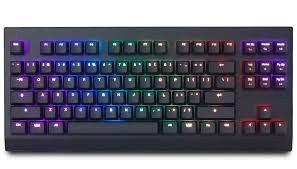
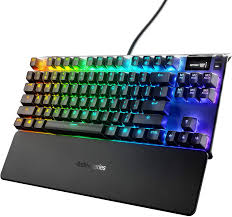
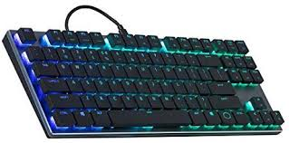
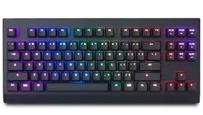
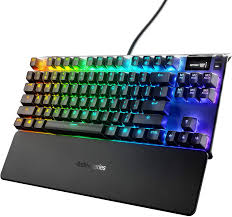
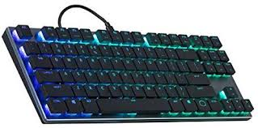

The KAMK is a new keyboard that makes keying comfortable. To do this the keyboard utilizes AI technology to keep track of your typing patterns which can make some keys easier to press and some harder to press. Also if you have no use for a key you can bind it to almost any purpose. The KAMK also comes with a tone of features that other analog keyboards don't have here's a table to show the difference.
 





| Analog Keyboard Feature Comparison | Keystone | Wooting | Steelseries | Coolermaster |
|---|---|---|---|---|
| Analog under every key | Yes | Yes | No | No |
| Hot-Swap Switches | Yes | Yes | No | No |
| Full Range Sensitivity | Yes | No | No | No |
| AI sensing | Yes | No | No | No |
| Switch Options | Tactile, Clicky, Linear | Clicky, Linear | Linear | Linear |
| Sub 1ms Switch Response | Yes | Yes | Yes | No |
| Per key activation point | Yes | No | Yes | No |
| 100+ FPS LED Animation | Yes | No | No | No |
| Fully Programmable Macros | Yes | No | No | No |
| USB-C Detachable Cable | Yes | Yes | No | Yes |
As you can see The KAMK is the clear choice. With all these features it is the best and most comfortable analog keyboard. Who wouldn't want it.